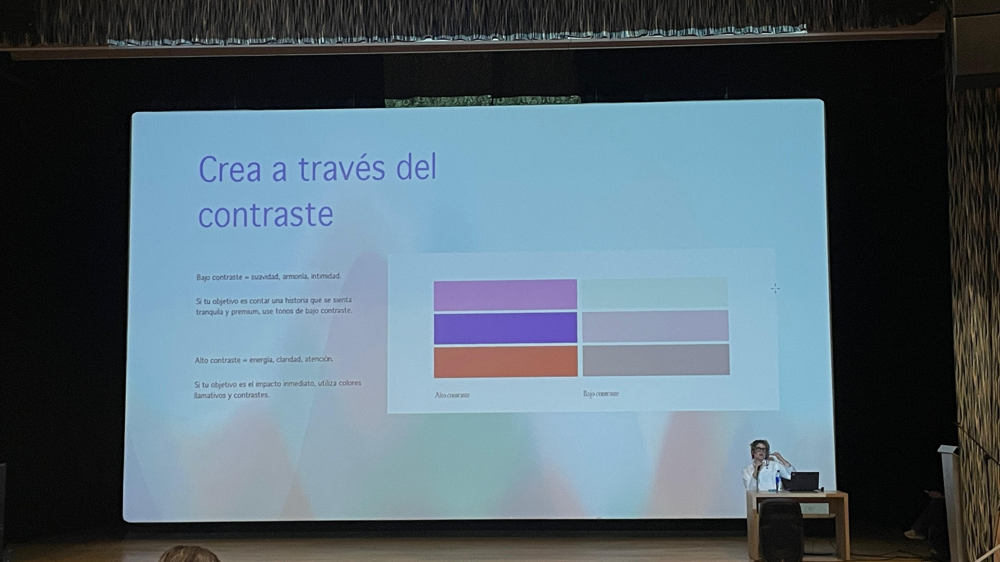

Moda ECCI
Este sitio web presenta una recopilación de fotografías, experiencias y aspectos destacados del evento Moda ECCI, una actividad académica orientada al aprendizaje, la creatividad y el conocimiento del sistema moda.
Acerca del evento
Moda ECCI fue un espacio académico donde estudiantes,aprendices, docentes e invitados compartieron conocimientos relacionados con el diseño, la creatividad, la comunicación visual y las tendencias de la industria de la moda.
Durante la jornada se desarrollaron actividades orientadas al fortalecimiento de competencias profesionales y al intercambio de experiencias entre los asistentes.
Detalles del evento
Lugar
Auditorio ECCI
Participantes
Estudiantes,aprendices, docentes e invitados especiales
Tipo de evento
Actividad académica y formativa
Temática
Moda, diseño, creatividad e innovación
Institución
Universidad ECCI
Fecha
27/05/2026
Sara Viloria

Biografía
Sara Viloria es una profesional vinculada al mundo del diseño, la ilustración y la teoría del color. Su trabajo se ha enfocado en el estudio del color como herramienta de comunicación visual, permitiendo comprender cómo los colores influyen en las emociones, la percepción y la construcción de identidad de marcas y proyectos creativos.
A lo largo de su trayectoria ha participado en espacios académicos, conferencias y actividades formativas donde comparte conocimientos relacionados con la psicología del color, la creatividad y el diseño visual.
Durante el evento Moda ECCI, su intervención permitió a los asistentes comprender la importancia del color dentro de la moda, el diseño y la comunicación visual, mostrando cómo estos conceptos pueden aplicarse en diferentes áreas profesionales.
Glosario de Términos
| Palabra | Palabra (English) | Significado |
|---|---|---|
| Teoría del Color | Color Theory | Estudio de cómo los colores interactúan y generan diferentes sensaciones visuales y emocionales. |
| Paleta de Colores | Palette | Conjunto de colores seleccionados para un diseño, colección o proyecto visual. |
| Contraste | Contrast | Diferencia visual entre colores, formas o elementos que permite destacarlos. |
| Armonía | Harmony | Combinación equilibrada de colores que genera una sensación agradable. |
| Moda | Fashion | Expresión cultural y artística reflejada a través de la vestimenta y las tendencias. |
| Diseño | Design | Proceso creativo utilizado para desarrollar productos, prendas o experiencias visuales. |
| Creatividad | Creativity | Capacidad de generar ideas nuevas e innovadoras. |
| Tendencia | Trend | Tendencia popular que influye en la moda y el diseño durante un periodo determinado. |
| Identidad de Marca | Brand Identity | Conjunto de elementos visuales que representan una marca y la diferencian de otras. |
| Comunicación Visual | Visual Communication | Transmisión de información mediante imágenes, colores, símbolos y diseño gráfico. |
| Colores Cálidos | Warm Colors | Colores cálidos como rojo, naranja y amarillo, asociados con energía y dinamismo. |
| Colores Fríos | Cool Colors | Colores fríos como azul, verde y violeta, relacionados con tranquilidad y equilibrio. |
| Psicología del Color | Psychology of Color | Estudio de cómo los colores influyen en las emociones, comportamientos y decisiones. |
| Textura | Texture | Característica visual o física que aporta sensación de superficie a una prenda o diseño. |
| Innovación | Innovation | Aplicación de nuevas ideas o métodos para mejorar procesos, diseños o productos. |
Galería del Evento
Fotografías tomadas durante el evento Moda ECCI.



Seguridad y Salud en el Trabajo (SST)
Identificación de riesgos y medidas preventivas durante la participación en el evento Moda ECCI.
¿Para qué sirve SST?
La Seguridad y Salud en el Trabajo tiene como objetivo prevenir accidentes, proteger la salud de las personas y promover ambientes seguros durante las actividades académicas, laborales y sociales.
¿Qué es SST?
Es un conjunto de normas, procedimientos y acciones destinadas a identificar peligros, evaluar riesgos y aplicar medidas que permitan proteger la integridad física y mental de las personas.
Riesgos observados durante el evento
- Caídas por desplazamiento en escaleras o pasillos.
- Aglomeración de personas en entradas y salidas.
- Distracciones durante la circulación dentro del auditorio.
- Uso de equipos eléctricos y audiovisuales.
- Permanecer sentado durante largos periodos de tiempo.
Medidas de control y buenas prácticas
- Seguir las indicaciones del personal organizador.
- Mantener despejadas las rutas de evacuación.
- Evitar correr dentro de las instalaciones.
- Identificar las salidas de emergencia.
- Mantener una postura adecuada durante las conferencias.
- Reportar cualquier situación insegura.
- Respetar las normas de convivencia y seguridad.
Indagación y Reflexión Personal
Opinión personal sobre la experiencia vivida en Moda ECCI.
Mi opinión sobre el evento
La participación en Moda ECCI fue una experiencia enriquecedora, ya que permitió conocer aspectos relacionados con el diseño, la creatividad y la importancia de la comunicación visual. La conferencia de Sara Viloria mostró cómo el color influye en las emociones, la percepción y la construcción de identidad dentro de diferentes proyectos.
Como aprendiz ADSO, considero que estos conocimientos también pueden aplicarse al desarrollo de software, especialmente en el diseño de interfaces, la experiencia de usuario y la presentación visual de aplicaciones y sitios web.
Conclusión
Este proyecto permitió documentar y analizar diferentes aspectos del evento Moda ECCI, incluyendo la biografía de la conferencista, la galería fotográfica, los conceptos aprendidos, los aspectos de Seguridad y Salud en el Trabajo (SST) y la importancia del color dentro de la comunicación visual.
En conclusión, Moda ECCI demostró que la moda, el diseño y la tecnología pueden complementarse para crear experiencias más atractivas e innovadoras. Además, fortaleció mi capacidad para relacionar conocimientos de diferentes áreas y aplicarlos en mi proceso de formación como futuro desarrollador de software.
Información del Autor
Datos del estudiante responsable del desarrollo de este proyecto.

Yilder Stiven Rodriguez Lozada
Programa: Análisis y Desarrollo de Software (ADSO)
Ficha: 3171084
Correo: yilderrodriguez08@gmail.com
Proyecto: Moda ECCI – Experiencia Académica